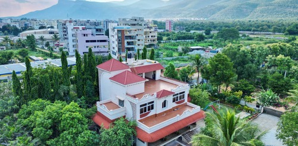

Rayachoty
Ajay Residency

The hotel is located at 41 Milestone, NH-8 (National Highway 8), opposite Haldiram, near Toll Plaza, Kherki Daula, Gurgaon, Haryana – 122002.
From the event/venue perspective (another branch/location of “Ajay Residency” in Gurgaon, Sector 84) the venue has: 1 banquet hall, capacity up to ~200 floating guests, 50 vehicle parking, veg & non-veg menu.
Suitable for travellers looking for budget-friendly accommodation near Gurgaon/Delhi corridor and needing access via highway.